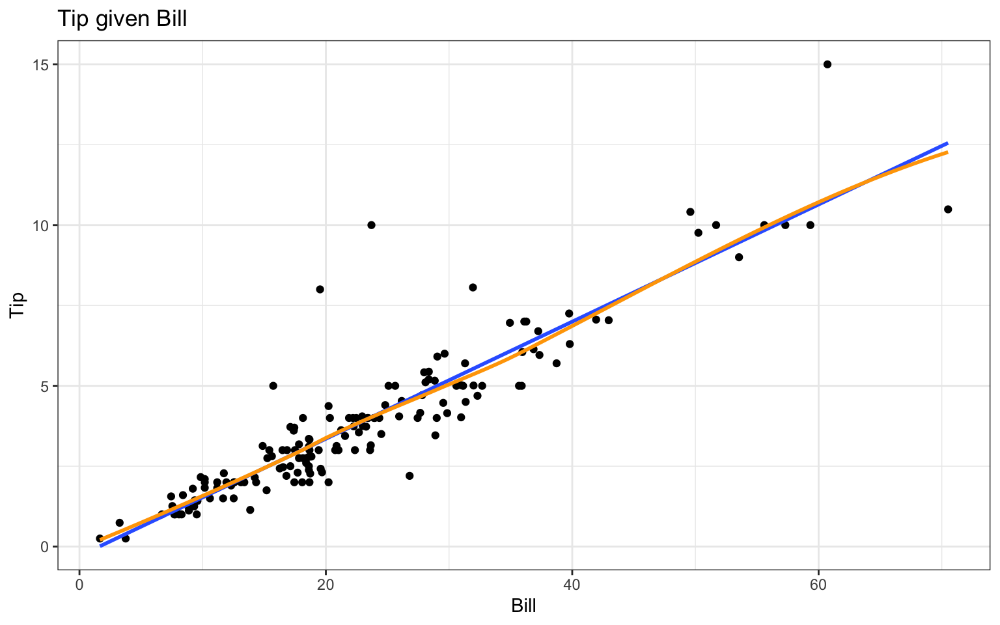
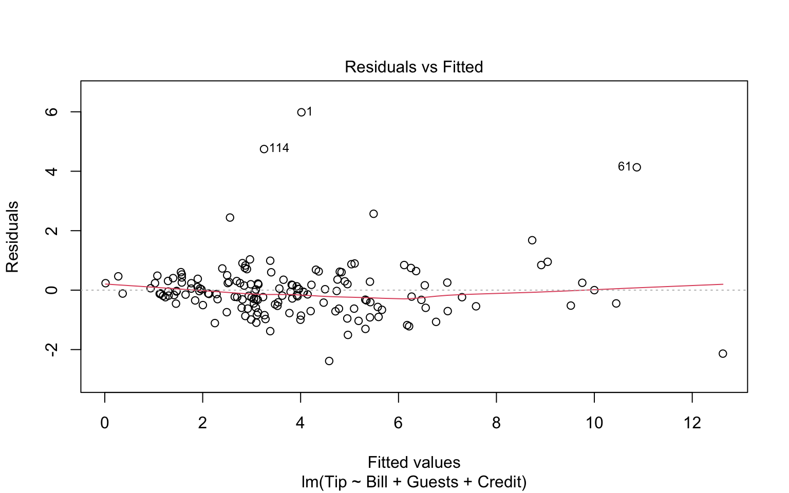
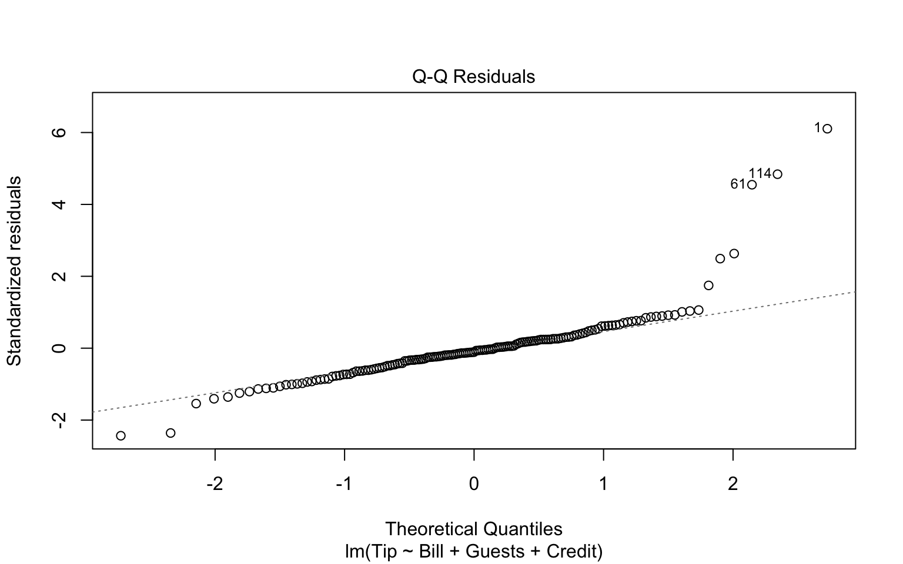
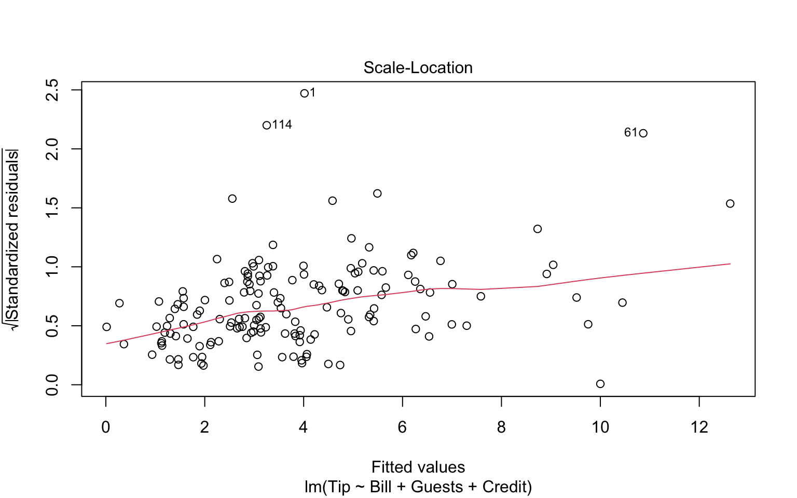
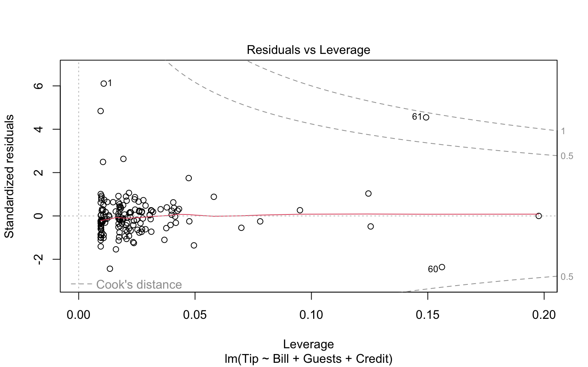
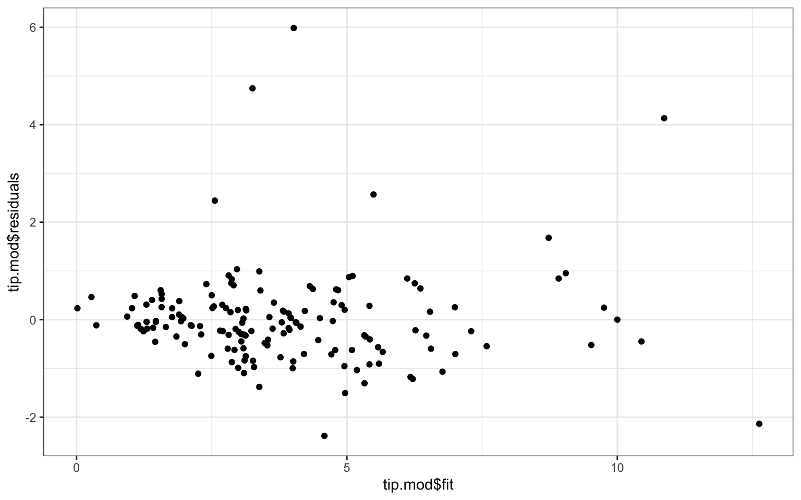
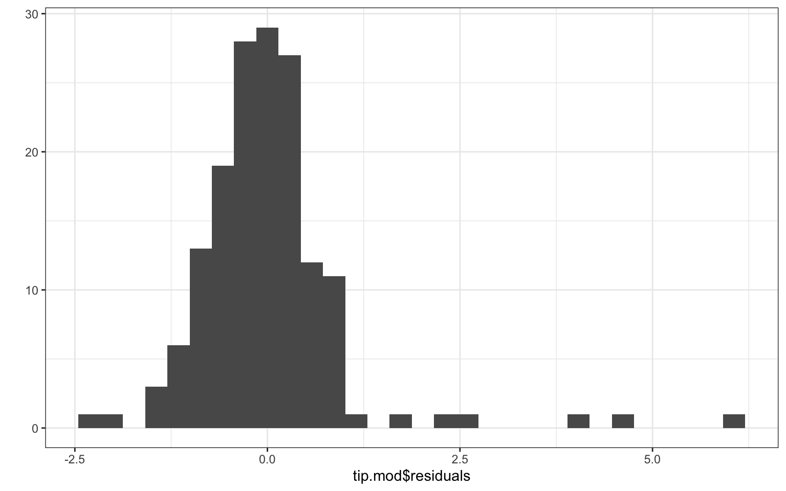
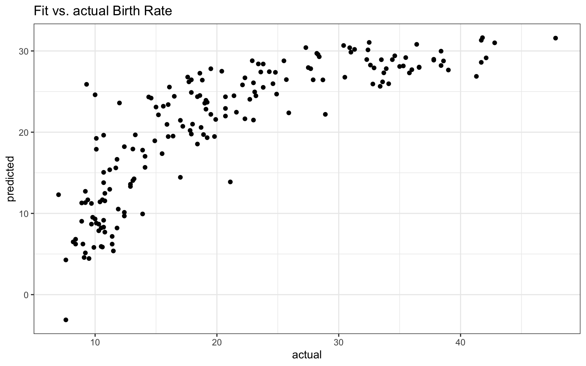

This walkthrough shows how to fit simple linear regression models in R. Linear regression is the main way researchers tend to examine the relationships between multiple variables. This document runs through some code without too much discussion, with the assumption that you are already familiar with interpretation of such models.
4.1 Simple Regression
We are going to use an example dataset, RestaurantTips, that records tip amounts for a series of bills. Let’s first regress Tip on Bill. Before doing regression, we should plot the data to make sure using simple linear regression is reasonable. For kicks, we add in an automatic regression line as well by taking advantage of ggplot’s geom_smooth() method:
# load the data into memorydata(RestaurantTips)# plot Tip on Billggplot( RestaurantTips, aes(x = Bill, y = Tip) ) +geom_point() +geom_smooth( method="lm", se=FALSE ) +geom_smooth( method="loess", se=FALSE, col="orange" ) +labs(title ="Tip given Bill")

That looks pretty darn linear! There are a few unusually large tips, but no extreme outliers, and variability appears to be constant at all levels of Bill , so we proceed:
# fit the linear modelmod <-lm(Tip ~ Bill, data = RestaurantTips)summary(mod)
Call:
lm(formula = Tip ~ Bill, data = RestaurantTips)
Residuals:
Min 1Q Median 3Q Max
-2.391 -0.489 -0.111 0.284 5.974
Coefficients:
Estimate Std. Error t value Pr(>|t|)
(Intercept) -0.29227 0.16616 -1.76 0.081 .
Bill 0.18221 0.00645 28.25 <2e-16 ***
---
Signif. codes: 0 '***' 0.001 '**' 0.01 '*' 0.05 '.' 0.1 ' ' 1
Residual standard error: 0.98 on 155 degrees of freedom
Multiple R-squared: 0.837, Adjusted R-squared: 0.836
F-statistic: 798 on 1 and 155 DF, p-value: <2e-16
The first line tells R to fit the regression. The thing on the left of the ~ is our outcome, the things on the right are our covariates or predictors. R then saves the results of all that work under the name mod (short for model - you can call it anything you want). Once we fit the model, we used summary() command to print the output to the screen.
Results relevant to the intercept are in the (Intercept) row and results relevant to the slope are in the Bill row (Bill is the explanatory variable). The Estimate column gives the estimated coefficients, the Std. Error column gives the standard error for these estimates, the t value is simply estimate/SE, and the p-value is the result of a hypothesis test testing whether that coefficient is significantly different from 0.
We also see the RMSE as Residual standard error and \(R^2\) as Multiple R-squared. The last line of the regression output gives details relevant to an ANOVA table for testing our model against no model. It has the F-statistic, degrees of freedom, and p-value.
You can pull the coefficients of your model out with the coef() command:
coef(mod)
(Intercept) Bill
-0.292 0.182
coef(mod)[1] # intercept
(Intercept)
-0.292
coef(mod)[2] # slope
Bill
0.182
coef(mod)["Bill"] # alternate way.
Bill
0.182
Alternatively, you can use the tidy() function from broom to turn the regression results into a tidy data frame, which makes it easier to work with:
tidy(mod)
# A tibble: 2 × 5
term estimate std.error statistic p.value
<chr> <dbl> <dbl> <dbl> <dbl>
1 (Intercept) -0.292 0.166 -1.76 8.06e- 2
2 Bill 0.182 0.00645 28.2 5.24e-63
tidy(mod)[[2,2]] # slope
[1] 0.182
We can plot our regression line on top of the scatterplot manually using the geom_abline() layer in ggplot:
We now include the additional explanatory variables of number in party (Guests) and whether or not they pay with a credit card (Credit):
tip.mod <-lm(Tip ~ Bill + Guests + Credit, data=RestaurantTips )summary(tip.mod)
Call:
lm(formula = Tip ~ Bill + Guests + Credit, data = RestaurantTips)
Residuals:
Min 1Q Median 3Q Max
-2.384 -0.478 -0.108 0.272 5.984
Coefficients:
Estimate Std. Error t value Pr(>|t|)
(Intercept) -0.25468 0.20273 -1.26 0.21
Bill 0.18302 0.00846 21.64 <2e-16 ***
Guests -0.03319 0.10282 -0.32 0.75
Credity 0.04217 0.18282 0.23 0.82
---
Signif. codes: 0 '***' 0.001 '**' 0.01 '*' 0.05 '.' 0.1 ' ' 1
Residual standard error: 0.985 on 153 degrees of freedom
Multiple R-squared: 0.838, Adjusted R-squared: 0.834
F-statistic: 263 on 3 and 153 DF, p-value: <2e-16
This output should look very similar to the output for one variable, except now there is a row corresponding to each explanatory variable. Our two-category (y, n) Credit variable was automatically converted to a 0-1 dummy variable (with “y” being 1 and “n” our baseline).
You can make plots and tables of your fit models. For one easy kind of regression graph, try ggeffects:
# graph model 2, with Bill on X, Credit as color, and Guests held constant at the meanggeffect(tip.mod, terms =c("Bill", "Credit")) |>plot(add.data =TRUE, ci =FALSE)
Data points may overlap. Use the `jitter` argument to add some amount of
random variation to the location of data points and avoid overplotting.
You can include any explanatory categorical variable in a multiple regression model, and R will automatically create corresponding 0/1 variables. For example, if you were to include gender coded as male/female, R would create a variable GenderMale that is 1 for males and 0 for females.
4.3.1 Numbers Coding Categories.
If you have multiple levels of a category, but your levels are coded with numbers you have to be a bit careful because R can treat this as a quantitative (continuous) variable by mistake in some cases. You will know it did this if you only see the single variable on one line of your output. For categorical variables with \(k\) categories, you should see \(k-1\) lines.
To make a variable categorical, even if the levels are numbers, convert the variable to a factor with as.factor or factor:
# load the US states datadata( USStates )# convert Region to a factorUSStates <- USStates |>mutate(Region =factor(Region))
4.3.2 Setting new baselines.
We can reorder the levels if desired (the first is our baseline).
Now any regression will use the south as baseline.
4.3.3 Testing for significance of a categorical variable.
When deciding whether to keep a categorical variable, we need to test how important all the dummy variables for that category are to the model all at once. We do this with ANOVA. Here we examine whether region is useful for predicting the percent vote for Clinton in 2016:
Analysis of Variance Table
Model 1: ClintonVote ~ HouseholdIncome + HouseholdIncome + HighSchool +
EighthGradeMath
Model 2: ClintonVote ~ HouseholdIncome + HouseholdIncome + HighSchool +
EighthGradeMath + Region
Res.Df RSS Df Sum of Sq F Pr(>F)
1 46 3287
2 43 2649 3 638 3.45 0.025 *
---
Signif. codes: 0 '***' 0.001 '**' 0.01 '*' 0.05 '.' 0.1 ' ' 1
Region is still important, beyond including some further controls. Interpreting this mess of a regression is not part of this document; this document shows you how to run regressions but it doesn’t discuss whether you should or not.
4.3.4 Missing levels in a factor
R often treats categorical variables as factors. This is often useful, but sometimes annoying. A factor has different levels which are the different values it can be. For example:
data(FishGills3)levels(FishGills3$Calcium)
[1] "" "High" "Low" "Medium"
table(FishGills3$Calcium)
High Low Medium
0 30 30 30
Note the weird nameless level; it also has no actual observations in it. Nevertheless, if you make a boxplot, you will get an empty plot in addition to the other three. This error was likely due to some past data entry issue. You can drop the unused level:
R has made you a bunch of dummy variables automatically. Here “high” is the baseline, selected automatically. We can also force it so there is no baseline by removing the intercept, in which case the coefficients are the means of each group.
Suppose a server at this bistro is about to deliver a $20 bill, and wants to predict their tip. They can get a predicted value and 95% (this is the default level, change with level) prediction interval with
new.dat =data.frame( Bill =c(20) )predict(mod,new.dat,interval ="prediction")
fit lwr upr
1 3.35 1.41 5.29
They should expect a tip somewhere between $1.41 and $5.30.
If we know a bit more we can use our more complex model called tip.mod from above:
new.dat =data.frame( Bill =c(20), Guests=c(1), Credit=c("n") )predict(tip.mod,new.dat,interval ="prediction")
fit lwr upr
1 3.37 1.41 5.34
This is the predicted tip for one guest paying with cash for a $20 tip. It is wider than our original interval because our model is a bit more unstable (it turns out guest number and credit card aren’t that relevant or helpful).
Compare the prediction interval to the confidence interval
new.dat =data.frame( Bill =c(20), Guests=c(1), Credit=c("n") )predict(tip.mod, new.dat, interval ="confidence")
fit lwr upr
1 3.37 3.09 3.65
This predicts the mean tip for all single guests who pay a $20 bill with cash. Our interval is smaller because we are generating a confidence interval for where the mean is, and are ignoring that individuals will vary around that mean. Confidence intervals are different from prediction intervals.
4.4.3 Removing Outliers
If you can identify which rows the outliers are on, you can do this by hand (say the rows are 5, 10, 12).
new.data = old.data[ -c(5,10,12), ]lm( Y ~ X, data=new.data )
Some technical details: The c(5,10,12) is a list of 3 numbers. The c() is the concatenation function that takes things makes lists out of them. The “-list” notation means give me my old data, but without rows 5, 10, and 12. Note the comma after the list. This is because we identify elements in a dataframe with row, column notation. So old.data[1,3] would be row 1, column 3.
If you notice your points all have X bigger than some value, say 20.5, you could use filtering to keep everything less than some value:
new.data =filter( old.data, X <=20.5 )
4.4.4 Missing data
If you have missing data, lm will automatically drop those cases because it doesn’t know what else to do. It will tell you this, however, with the summary command.
Call:
lm(formula = BirthRate ~ Rural + Health + ElderlyPop, data = AllCountries)
Residuals:
Min 1Q Median 3Q Max
-16.592 -3.728 -0.791 3.909 16.218
Coefficients:
Estimate Std. Error t value Pr(>|t|)
(Intercept) 26.5763 1.6795 15.82 < 2e-16 ***
Rural 0.0985 0.0224 4.40 1.9e-05 ***
Health -0.0995 0.0930 -1.07 0.29
ElderlyPop -1.0249 0.0881 -11.64 < 2e-16 ***
---
Signif. codes: 0 '***' 0.001 '**' 0.01 '*' 0.05 '.' 0.1 ' ' 1
Residual standard error: 5.83 on 174 degrees of freedom
(39 observations deleted due to missingness)
Multiple R-squared: 0.663, Adjusted R-squared: 0.657
F-statistic: 114 on 3 and 174 DF, p-value: <2e-16
4.4.5 Residual plots and model fit
If we throw out model into the plot function, we get some nice regression diagnostics.
plot(tip.mod)




To generate classic model fit diagnostics with more control, we need to calculate residuals, make a residual versus fitted values plot, and make a histogram of the residuals. We can make some quick and dirty plots with qplot (standing for “quick plot”) like so:
qplot(tip.mod$fit, tip.mod$residuals )
Warning: `qplot()` was deprecated in ggplot2 3.4.0.

and
qplot(tip.mod$residuals, bins=30)

We see no real pattern other than some extreme outliers. The residual histogram suggests we are not really normally distributed, so we should treat our SEs and \(p\)-values with caution. These plots are the canonical “model-checking’’ plots you might use.
Another is the “fitted outcomes vs. actual outcomes’’ plot of:
predicted =predict( dev.lm )actual = dev.lm$model$BirthRateqplot( actual, predicted, main="Fit vs. actual Birth Rate" )

Note the dev.lm variable has a model variable inside it. This is a data frame of the used data for the model (i.e., if cases were dropped due to missingness, they will not be in the model). We then grab the birth rates from this, and make a scatterplot. If we tried to skip this, and use the original data, we would get an error because our original data set has some observations that were dropped.
Note we can’t just add our predictions to AllCountries since we would get an error due to this dropped data issue:
AllCountries$predicted =predict( dev.lm )
Error in `$<-.data.frame`(`*tmp*`, predicted, value = c(`1` = 31.630301617421, :
replacement has 179 rows, data has 217
The newdata tells predict to generate a prediction for each row in AllCountries rather than each row in the left over data after lm dropped cases with missing values.